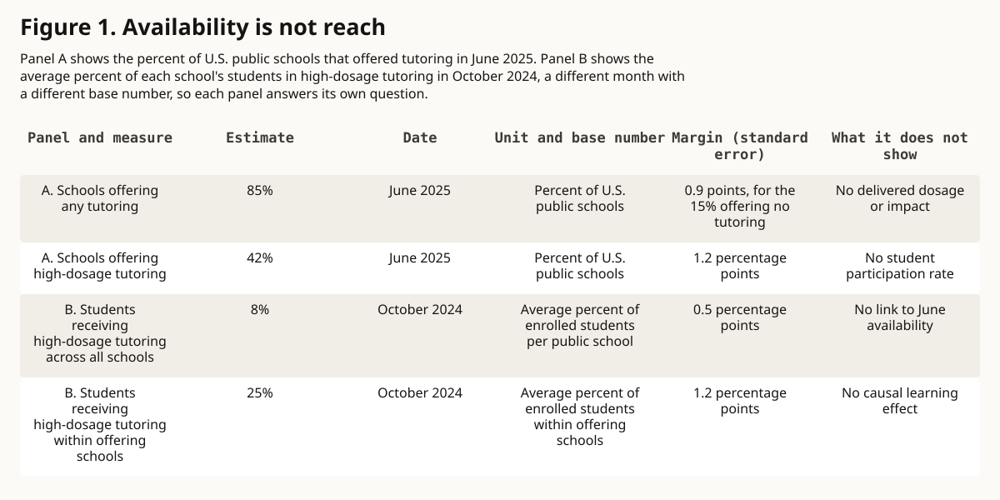

public-interest analysis · education-access
Availability Is Not Reach
A program cannot carry the label evidence-based at scale unless the public can still see whom it reached, what students received, what changed, and what remains uncertain.
In this article
Research summary and limits
Question. What would count as public proof that high-dosage tutoring still works after emergency funding becomes an ordinary budget decision?
Finding. Randomized trials support structured tutoring, but scale-relevant estimates are smaller and national availability is much broader than measured student reach.
Evidence. Two meta-analyses and current federal survey data distinguish experimental effects, school offers, student participation, implementation, and funding conditions.
Limit. The national estimates come from different months and denominators, and none links current participation to student learning outcomes.
A proven intervention enters ordinary budgets
Tutoring has one of the stronger experimental records among education interventions. That record matters, but the public question changes when an emergency program becomes a recurring system. A literature average cannot show whether a current school found tutors, scheduled sessions, reached eligible students, or delivered the intended time.
The program must therefore be measured where students encounter it. An appropriation shows that money was authorized. A contract shows that capacity was purchased. An enrollment list shows that students were assigned. None of those records alone shows what instruction arrived or what outcome changed.
What works means in the experimental literature
A systematic review published online in 2023 and in a 2024 journal issue synthesized 89 randomized tutoring studies. It reported an overall pooled effect of 0.288 standard deviations, with a standard error of 0.029 and p<0.001. A standardized effect expresses results from different measures on a common scale. It does not turn the studies into one identical program.
The studies varied in grade, subject, tutor role, schedule, setting, assessment, and era. The pooled estimate is evidence that structured tutoring can improve learning under tested conditions. It is not a promise that any activity called tutoring will reproduce that average.
Scale changes the expected claim
A 2026 meta-analysis examined 263 randomized controlled trials and asked what happens when the evidence is aligned with large programs and independent standardized tests. Its full sample produced a pooled estimate of 0.40 standard deviations. Target-aligned estimates averaged 0.22 for programs serving 400 to 999 students and 0.16 for programs serving at least 1,000 students.
Those estimates belong to different analytic samples. They are not rungs on a performance ladder. The largest-program estimate is imprecise because relatively few trials met the condition, and the authors report wide prediction intervals. The pattern does not establish a fixed penalty for crossing a particular enrollment threshold.
Larger programs often change several things at once, including intended dosage, student-to-tutor ratios, targeting, delivery setting, and implementation quality. The analysis explores those pressures but cannot isolate scale as one causal mechanism. A smaller target-aligned average can remain educationally important while still requiring more modest public claims.
Availability is not reach
The National Center for Education Statistics reports that in June 2025, 85 percent of public schools offered some tutoring and 42 percent offered high-dosage tutoring. The 85 percent figure is the complement of the workbook's 15 percent no-tutoring estimate. Both are school-level weighted survey estimates.
The latest student-reach fields in the same release series come from October 2024. The average share receiving high-dosage tutoring was 8 percent across all public schools and 25 percent within schools offering it. These are student-participation estimates summarized at the school level.
The four percentages must not become a funnel. June 2025 availability and October 2024 reach answer different questions, use different dates, and do not share one sequential denominator. They reveal a measurement gap, not an attrition rate.
Measure delivery, not the brochure
A minimum public receipt would keep intended eligibility, unique students served, assigned sessions, attended sessions, minutes delivered, weeks active, group size, tutor role, training, supervision, continuity, subject, and grade as separate fields. It would also name the outcome, baseline, follow-up interval, missing-data rule, and cost denominator.
This list is an editorial accountability design, not a federal standard. It is not a claim that disclosure alone improves instruction. Its purpose is narrower: prevent a program offer, a seat, an attendance record, and a completed dosage from becoming interchangeable facts.
Preserve the denominator
A statement such as 90 percent attended is incomplete until the denominator is visible. It could mean 90 of 100 enrolled students attended once, 90 percent of eligible students enrolled, or 90 percent of assigned sessions were completed. Each statement answers a different question.
Consider an illustrative program with 120 eligible students, 80 assigned seats, 72 students who attend at least once, and 48 who complete the intended dosage. The invented numbers show why the denominator belongs in the claim. They do not describe a real school, district, or program.
Preserve an independent outcome
Session completion is an implementation measure, not a learning result. Tutor-made checks, program dashboards, district assessments, and independent standardized tests can all carry useful information, but they support different claims and face different incentives.
An outcome should be named before the result, matched to the question, and accompanied by its interval and missing-data rule. Independent does not mean that only standardized tests matter. It means the measure and analysis do not quietly change after the implementation result is known.
Funding is a boundary condition, not an outcome
Federal guidance identifies recurring formula and discretionary programs that may support eligible tutoring costs, including federal title programs and other grants. Eligibility, allowable uses, supplement-not-supplant requirements, state plans, and local appropriations still govern any specific use.
The emergency-fund timeline is also qualified. The Department of Education's current liquidation-extension page records a March 2025 policy change, later court injunctions, and continuation of previously approved extensions during litigation under its stated updates. That status can change and does not describe every recipient.
Funding evidence can show whether continuation may be possible. It cannot show how many students received tutoring, what dosage arrived, or whether learning changed.
The public claim
A public system should be able to say what it offered, whom it intended to serve, whom it reached, what students received, what outcome was measured, what changed, and what the evidence does not establish. Each field needs its own denominator, date, and limitation.
Evidence-based is a property of a bounded claim tied to a design and an outcome. It is not a permanent label that transfers automatically from a research literature to every implementation. If delivery and outcomes disappear from view at scale, the evidence has become a memory rather than a current public claim.
Figure 1. Availability is not reach
School availability in June 2025 and student reach in October 2024 are separate measures with different denominators.

What this cannot show. The four values are not a sequential funnel, an attrition rate, or evidence that current tutoring caused achievement changes.
Read the data and method
| Panel and measure | Estimate | Date | Unit and denominator | Standard error | Non-proof |
|---|---|---|---|---|---|
| A. Schools offering any tutoring | 85% | June 2025 | Percent of U.S. public schools | 0.9 points for complementary 15% no-tutoring estimate | No delivered dosage or impact |
| A. Schools offering high-dosage tutoring | 42% | June 2025 | Percent of U.S. public schools | 1.2 percentage points | No student participation rate |
| B. Students receiving high-dosage tutoring across all schools | 8% | October 2024 | Average percent of enrolled students per public school | 0.5 percentage points | No link to June availability |
| B. Students receiving high-dosage tutoring within offering schools | 25% | October 2024 | Average percent of enrolled students within offering schools | 1.2 percentage points | No causal learning effect |
- Scope
- School Pulse Panel estimates for U.S. public schools in two separate survey months
- Units
- Percent and percentage-point standard error
- Denominator
- Panel A uses public schools; Panel B uses average enrolled-student shares across all schools or offering schools
- Date
- June 2025 availability; October 2024 reach; source observed 2026-09-01
- Transformation
- The 85 percent estimate is the published complement of 15 percent no tutoring; no confidence intervals or cross-panel rates are computed
- Uncertainty
- School-reported weighted survey estimates from different months with different denominators
- Limitations
- The panels are descriptive, not linked to student outcomes, and draw no arrows between measures.
- Does not prove
- The four values are not a sequential funnel, an attrition rate, or evidence that current tutoring caused achievement changes.
Sources
- School Pulse Panel tutoring results and official data workbook. National Center for Education Statistics. current federal survey release and primary aggregate data workbook. Published 2025-06-01; observed 2026-09-01.
- School Pulse Panel methodology. National Center for Education Statistics. official sampling, collection, weighting, and disclosure methodology. Published 2024-07-01; observed 2026-09-01.
- The Promise of Tutoring for PreK-12 Learning: A Systematic Review and Meta-Analysis of the Experimental Evidence. American Educational Research Journal. peer-reviewed systematic review and meta-analysis of randomized tutoring evaluations. Published 2023-11-27; observed 2026-09-01.
- What Impacts Should We Expect From Tutoring at Scale? Exploring Meta-Analytic Generalizability. Review of Educational Research. peer-reviewed scale-focused meta-analysis of randomized controlled trials. Published 2026-06-05; observed 2026-09-01.
- Sustaining Evidence-Based High-Dosage Tutoring. U.S. Department of Education. official implementation and recurring-funding guidance. Published 2024-06-01; observed 2026-09-01.
- Education Stabilization Fund Liquidation Extensions. U.S. Department of Education. official current boundary on emergency-relief liquidation status. Published 2025-10-06; observed 2026-09-01.
Claim notes and limitations
One broad meta-analysis of randomized tutoring evaluations reported an overall pooled effect of 0.288 standard deviations.
Sources: S3
- Scope
- Eighty-nine randomized PreK-12 tutoring studies synthesized across varied programs and outcomes
- Uncertainty
- Programs, populations, subjects, assessments, settings, and eras varied
- Does not prove
- That any current local tutoring offer will reproduce the pooled effect
Scale-relevant tutoring estimates were smaller than the full-sample average in the 2026 analysis.
Sources: S4
- Scope
- Two hundred sixty-three randomized controlled trials with target-aligned independent-test subsets
- Uncertainty
- Few very large trials and wide prediction intervals
- Does not prove
- A fixed penalty for crossing a particular enrollment threshold or one causal mechanism
In June 2025, 85 percent of public schools reported some tutoring and 42 percent reported high-dosage tutoring.
Sources: S1
- Scope
- Weighted school-level School Pulse Panel estimates for U.S. public schools
- Uncertainty
- School-reported survey estimates; 85 percent is the complement of 15 percent no tutoring
- Does not prove
- Student reach, delivered dosage, implementation fidelity, or learning impact
In October 2024, average high-dosage participation was 8 percent across all public schools and 25 percent within schools offering it.
Sources: S1
- Scope
- Student-participation estimates summarized at the school level
- Uncertainty
- A different month and denominator from the June 2025 availability estimates
- Does not prove
- A sequential funnel from 85 to 42 to 25 to 8
School Pulse Panel estimates describe reported availability and reach, not linked student-level learning outcomes.
- Scope
- A monthly web survey of a sampled and weighted panel of public schools
- Uncertainty
- Weighting addresses sampling and nonresponse, not implementation verification
- Does not prove
- Causal effectiveness of current tutoring programs
Recurring federal streams may support eligible tutoring costs while emergency-fund liquidation status remains legally and administratively qualified.
- Scope
- Federal guidance and the Department's current liquidation-extension page
- Uncertainty
- Local eligibility, appropriations, state plans, and litigation vary and can change
- Does not prove
- A universal funding cliff, available local funds, or a funded local program
Public accountability should preserve availability, eligibility, reach, delivered dosage, staffing, cost, and independent outcomes as separate fields.
Sources: S1, S2, S3, S4, S5, S6
- Scope
- An editorial synthesis connecting experimental evidence, implementation conditions, survey measures, and funding boundaries
- Uncertainty
- The proposed receipt is not a validated reporting standard
- Does not prove
- That disclosure alone improves tutoring delivery or outcomes
Evidence-based is a bounded claim tied to a design and outcome, not a permanent label for every scaled implementation.
- Scope
- Editorial interpretation of experimental generalizability and implementation boundaries
- Uncertainty
- The claim does not evaluate any named school, district, tutor, or provider
- Does not prove
- A verdict on any specific current tutoring program
Corrections
No corrections recorded.